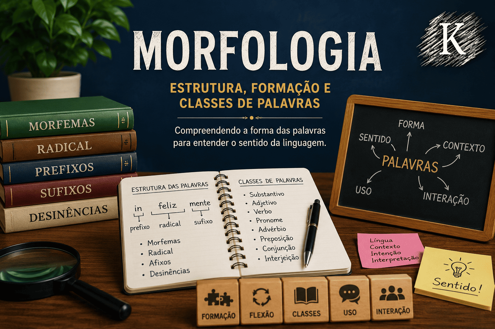

Morfologia: estrutura, formação e classes de palavras
A Morfologia é a área da gramática e da Linguística responsável por estudar a estrutura, a formação, a classificação e as flexões das palavras. Por meio dela, compreendemos como os vocábulos são formados, modificados e organizados dentro da Língua Portuguesa.
O estudo morfológico envolve conceitos como morfemas, radical, prefixos, sufixos, desinências, processos de formação de palavras e classes gramaticais, como substantivos, verbos, adjetivos, pronomes, advérbios, preposições, conjunções e interjeições.
Nesta seção do Mestre Kira, você encontrará conteúdos didáticos sobre morfologia da Língua Portuguesa, com explicações claras, exemplos práticos e aprofundamentos importantes para estudantes, vestibulandos, concursandos, professores e graduandos em Letras.

O que você encontrará nesta seção
Introdução à Morfologia;
Estrutura e formação das palavras;
Morfemas, radical, prefixos e sufixos;
Derivação, composição, justaposição e aglutinação;
Flexão de gênero, número, grau, tempo, modo e pessoa;
Classes morfológicas das palavras;
Substantivos, adjetivos, verbos e pronomes;
Advérbios, preposições, conjunções e interjeições;
Morfologia estrutural;
Relações entre forma, sentido e uso das palavras.
Os conteúdos foram organizados para facilitar o estudo progressivo da morfologia, contribuindo para o domínio da gramática, da interpretação textual e da produção escrita.
Os conteúdos desta seção são produzidos por Leildo Gonçalves, professor de Língua Portuguesa, pesquisador e criador do Mestre Kira, projeto educacional voltado ao ensino de linguagem, redação, literatura e tecnologia aplicada à educação.